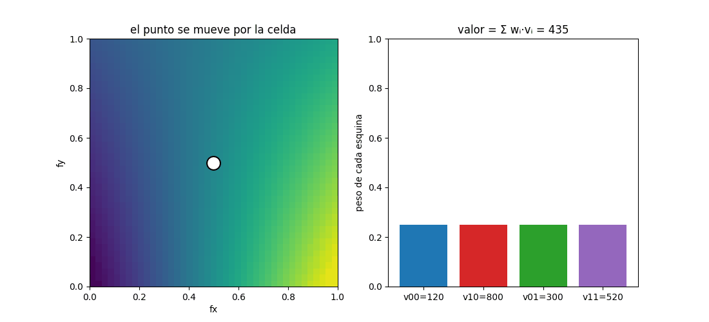

testing-lab · fundamento matemático · índice
Interpolación — leer entre celdas
El ladrillo invisible de la advección: cuando necesitamos el valor de un campo en un punto que cae entre las celdas, lo calculamos mezclando las vecinas según la cercanía. Pura media ponderada.
El problema
La rejilla solo guarda valores en puntos enteros (el centro de cada celda). Pero el backtrace semi-lagrangiano pregunta "¿cuánto valía el campo en (x=1.7, y=2.3)?" — un punto donde no hay celda. La interpolación inventa ese valor de forma razonable: lo estima a partir de las celdas que lo rodean, pesando más las que están más cerca.
1D: interpolación lineal (el caso fácil)
Entre dos valores a y b separados una celda, el
valor a una fracción f del camino es simplemente la recta que los
une:
Cada extremo pesa según lo cerca que esté el punto: si f = 0.7,
el valor es 70 % de b y 30 % de a.
2D: interpolación bilineal (lo que usa el motor)
En 2D el punto cae dentro de una celda con 4 esquinas. La fórmula es la misma idea, con un peso por esquina = producto de las cercanías en x y en y:

interpolar teje una superficie suave "clavada" en ellas.
Derecha: cómo se construye — se interpola cada borde horizontal
(lineal en x) y luego se interpola en vertical entre los dos bordes (lineal
en y). De ahí el nombre bi-lineal.
Y aquí se ve lo de "pesar por cercanía": al mover el punto por la celda, el peso de cada esquina sube cuando el punto se le acerca, y el valor es la suma ponderada:

Tres propiedades que importan:
- Nunca hay overshoot: como los pesos suman 1 y son positivos, el valor interpolado siempre queda entre el mínimo y el máximo de las esquinas. No puede inventar un valor más caliente que el más caliente de alrededor.
- Exacta en las esquinas: justo sobre una celda, el valor es el de esa celda (peso 1).
- Suave: la transición es continua, sin saltos.
interpolar del motor ya lo hace
así (ver engine/adveccion.h).
Cómo reproducir
bash testing-lab/build.sh
testing-lab/.venv/bin/python testing-lab/experiments/interpolacion.py # superficie + GIF de pesos
testing-lab/.venv/bin/python testing-lab/tests/test_interpolacion.py